기존 가전은 다음 고객에게, 기존 고객은 다음 생활에 맞는 가전으로
가전 구독은 초기 비용을 낮추지만, 장기 계약과 위약금·이전설치 조건 때문에 이사·결혼 같은 생활 변화에 대응하기 어렵습니다. 팀은 VOC 127,675건을 통합해 38,586건을 분석했고, 중고 거래에서 이미 나타나는 ‘다음 사용자에게 넘기는’ 행동을 LG 공식 구독 승계로 바꾼 순환형 서비스 LG LILO를 제안했습니다.
한국소비자원 조사에서 가전 구독·렌탈 경험자의 48.2%는 “원할 때 자유롭게 해지할 수 있는 서비스”에 가깝다고 인식했고, 계약 불만의 65.7%는 해지·위약금에 집중됐습니다. 20~30대 이동률(24.3%·20.4%)은 다른 연령대보다 높았습니다. 문제 탐색용 VOC 9,958건에서도 장기약정·위약금·이사·이전설치가 반복됐습니다.
생활 변화가 구독 해지가 아닌, 적합한 제품으로의 전환이 되려면 무엇이 필요할까?
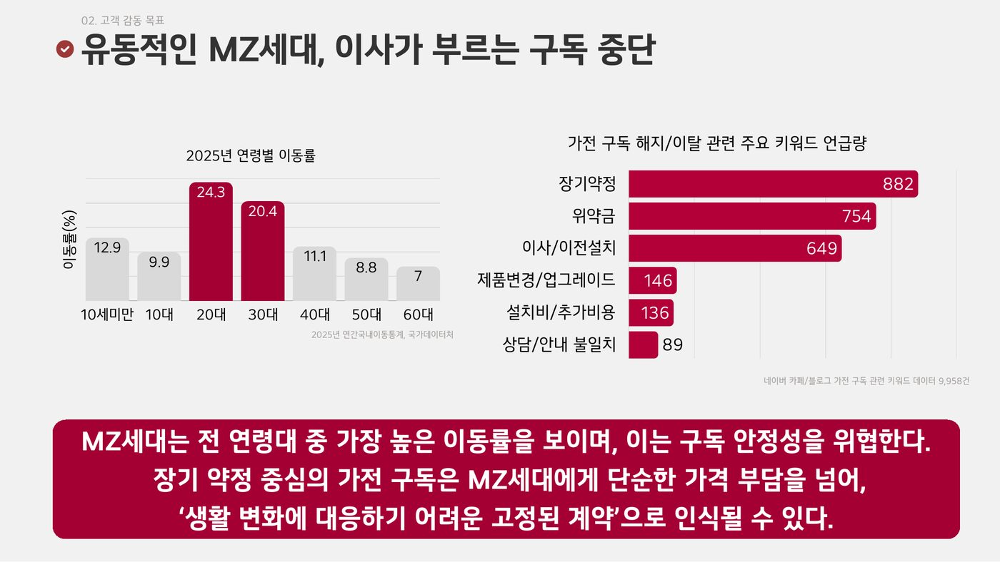
직접 수집한 34,561건을 포함한 팀 통합 원본 127,675건에서, 결측·중복·광고·비관련 문서를 단계적으로 걸러 38,586건(잔존율 약 30.2%)을 분석 대상으로 남겼습니다.
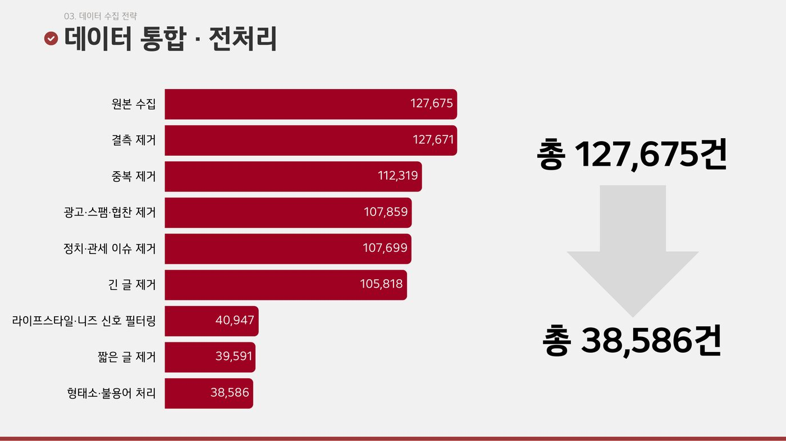
짧은 댓글·질문에서 핵심 단어를 바로 확인하려고 TF-IDF를, 3만 건이 넘는 희소 텍스트를 제한된 기간에 다루려고 MiniBatch K-Means를 골랐습니다. 실루엣 최고점은 k=8(0.0468)이었지만 군집이 지나치게 잘게 쪼개져, 통계 점수와 해석 가능성을 함께 보고 k=6을 선택했습니다.
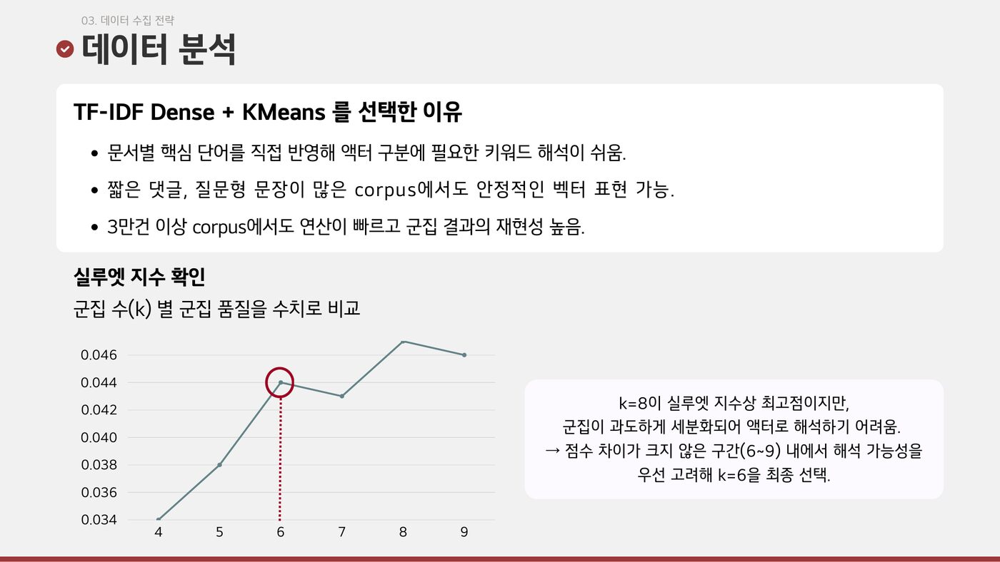
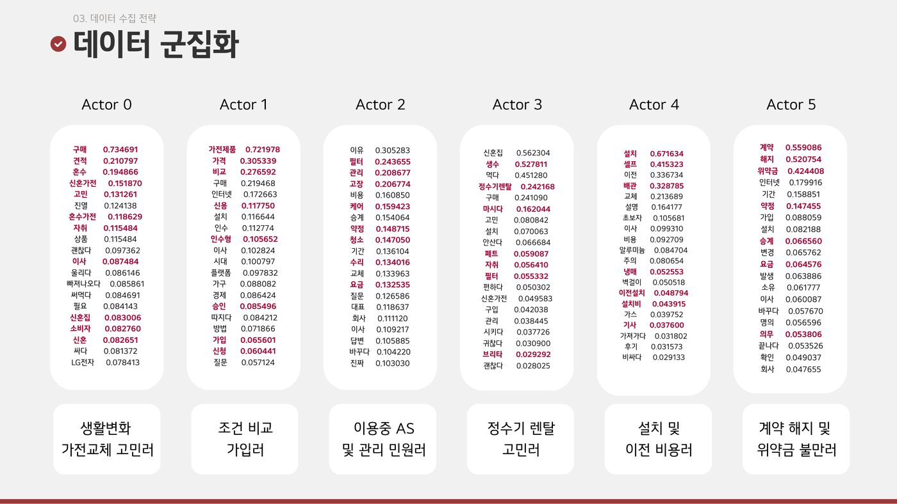
낮은 실루엣 지수를 고려해 명확한 고객 분류가 아닌 탐색적 니즈 상태로 해석했습니다. unigram TF-IDF는 문맥을 충분히 반영하지 못하며, LDA random seed를 고정하지 않아 안정성 검증이 부족합니다.
군집은 정해진 사람 유형이 아니라, 한 고객에게도 상황에 따라 동시에 나타날 수 있는 니즈 상태로 해석했습니다. KNU 감성사전으로 만족도·중요도를 정규화해 기회점수를 계산하고, 중요도는 높은데 만족도는 낮은 ‘생활 변화형’을 핵심 기회영역으로 골랐습니다.
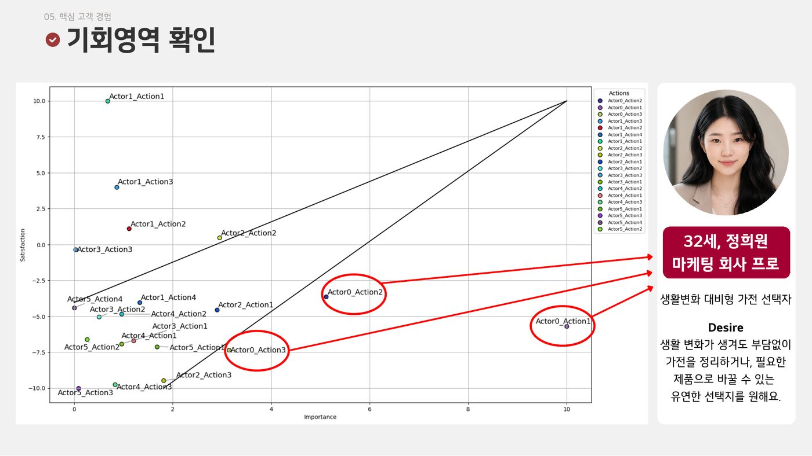
대표 고객(합성 페르소나)의 여정에서는, 생활이 바뀔수록 ‘구독은 자유롭게 그만둘 수 있을 것’이라는 기대와 실제 계약 부담 사이의 간극이 커졌습니다.
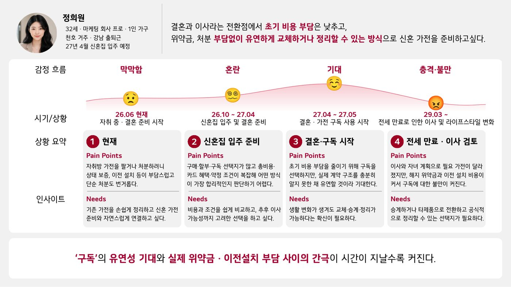
생활 변화형 VOC는 낮은 가격보다, 상황이 바뀌어도 기존 선택으로 손해 보지 않을 방법을 원했습니다.
위약금·장기약정 언급은 “해지 말고는 선택지가 없다”로, 이사·이전설치 언급은 “계약뿐 아니라 제품을 옮기는 일 자체가 문제”로, 중고거래·명의이전 수요는 “다음 사용자에게 넘기려는 행동이 이미 있다”로 읽었습니다. 그래서 유지·변경·승계를 함께 제안하고, 계약·물류·설치를 한 번의 경험으로 묶는 요구사항으로 정리했습니다.
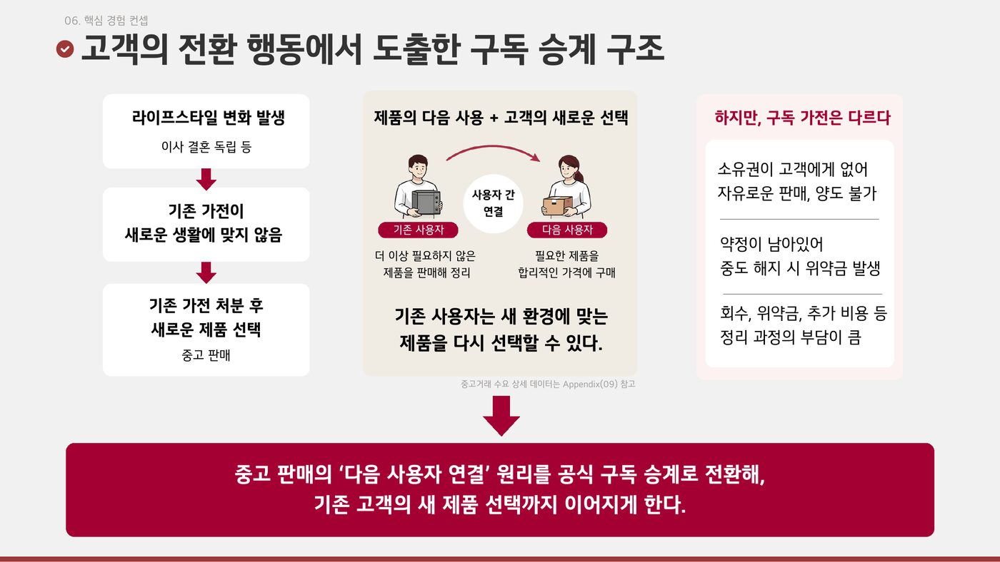
생활 변화 신호는 감지하되 자동으로 실행하지 않고 고객이 직접 확인하게 하고, 승계 상대는 AI가 매칭하며, 제품 상태는 ThinQ·케어 이력으로 인증하고, 계약·명의이전·설치는 LG가 공식 처리하는 순환형 구독 플랫폼입니다.
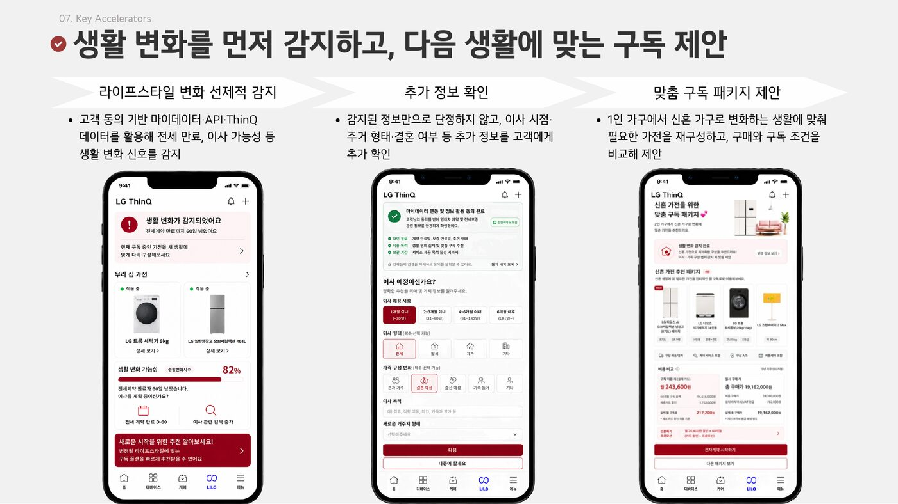
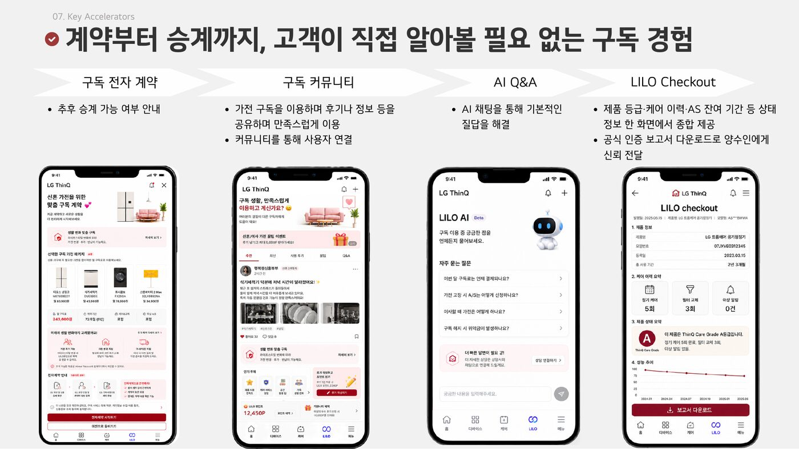
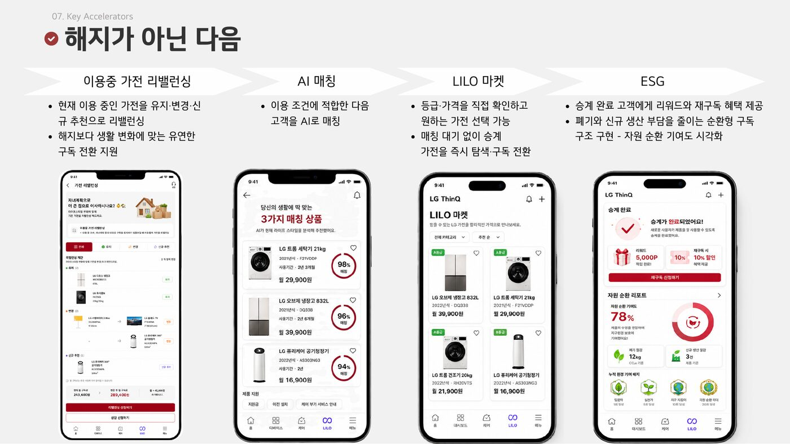
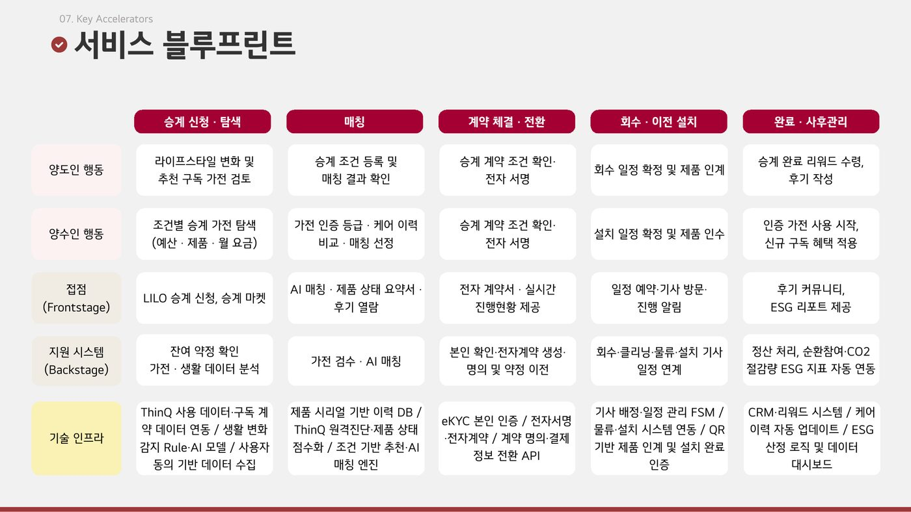
데이터로 확인한 문제 정의, 하이퍼파라미터 선택 근거, k=8 대신 해석 가능성을 고려한 k=6 선택 판단, 한 번 쓰고 끝나지 않는 순환형 서비스 구조가 긍정적으로 평가받아 LG CX 프로젝트 우수상을 받았습니다. 가장 크게 배운 것은 통계적 최적값과 기획적 해석이 다를 수 있다는 점, 그리고 해석에 판단이 많이 들어갈수록 원문 라벨링·seed 안정성 같은 검증 절차가 더 필요하다는 점이었습니다.
고객 유지율·위약금 절감률·매출·LTV·AI 추천 수용률 등은 측정하지 않았으며, 운영 후 검증할 지표·가설입니다. 목표 수치는 초기 가설이며 실제 달성 결과가 아닙니다.
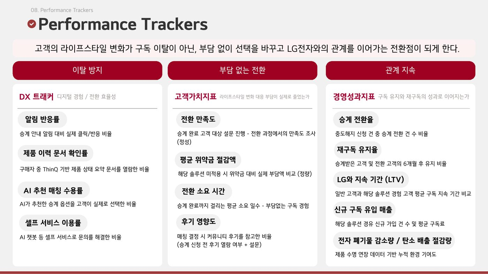